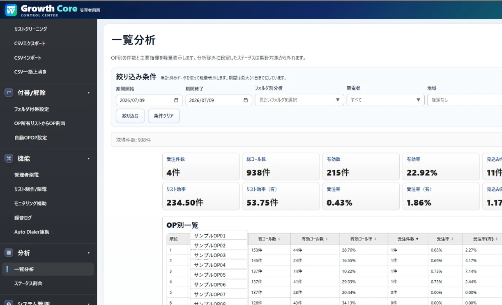
通話中
090-1234-5678
株式会社サンプル
担当：山田太郎
00:02:41
クラウド型CTIシステム
通話の可視化とデータ活用で、
営業活動の生産性を最大化するクラウドCTIです。
IT review
Grid Award
2025 Summer
LEADER
満足度調査
クラウドPBX部門
No.1
2024年度
多くの企業にご利用いただいています
ISSUE
ツールが分かれているほど、
現場の手間と管理の手間は増えていきます。
発信は別アプリ、記録は別シート。同じ内容を二度入力していて、
転記のたびにミスが起きる。
条件で絞り込んで、担当者に振り分けて、CSVに整えて。架電を始める前の作業が終わらない。
誰がどれだけ架電して、どこで止まっているのか。集計に手間がかかり、
判断が後手になる。
VALUE
アポインター画面と管理者画面を同じデータで運用。
架電結果がそのまま検索・集計・
分析につながります。
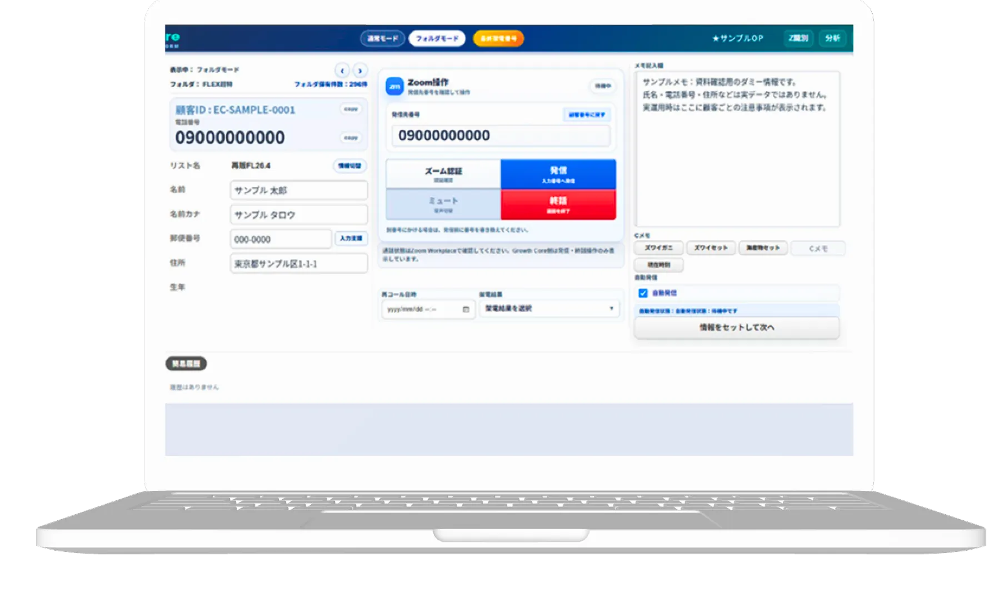
通話中
090-1234-5678
株式会社サンプル
担当：山田太郎
00:02:41
条件で絞り込んで、その場で架電対象を用意できます。
別ツールに切り替えず、画面内のボタンで発信できます。
終話後そのまま入力。転記の手間がなくなります。
件数も成果率も、担当者ごとにその場で確認できます。
CSV運用も権限管理も、管理画面にまとめています。
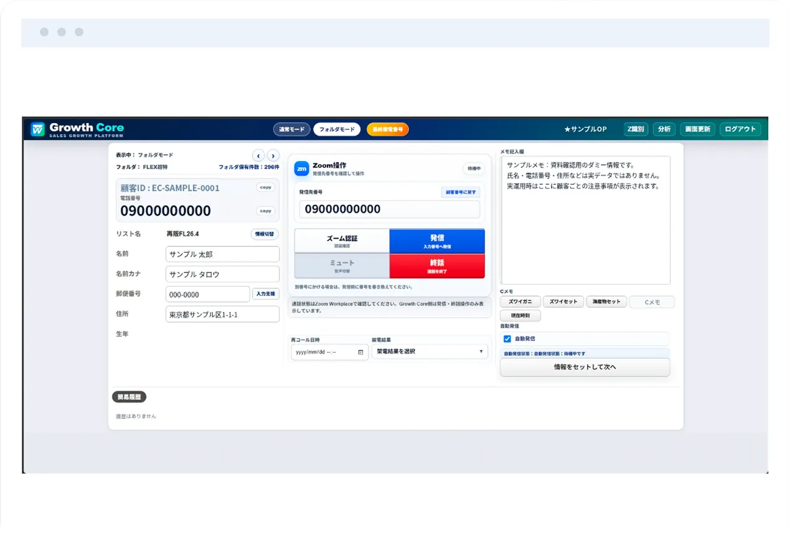
FEATURE 01
顧客情報の確認、システム操作、結果入力まで。
画面を移動せずに次の顧客へ進めます。
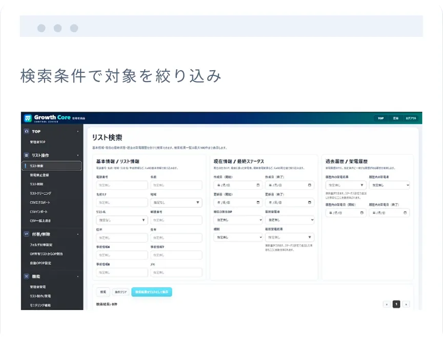
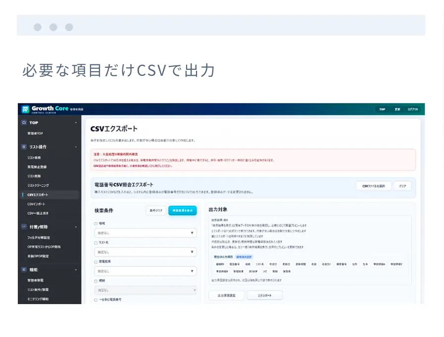
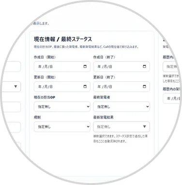
FEATURE 02
検索条件を組み立て、必要な項目だけを選んでCSVで
書き出し。運用中の一括更新にも対応します。
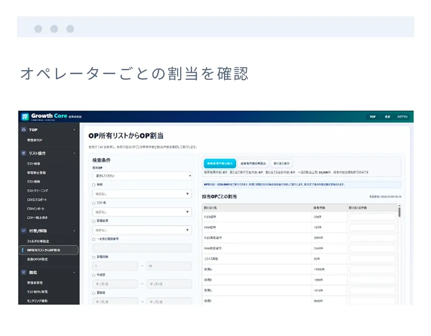
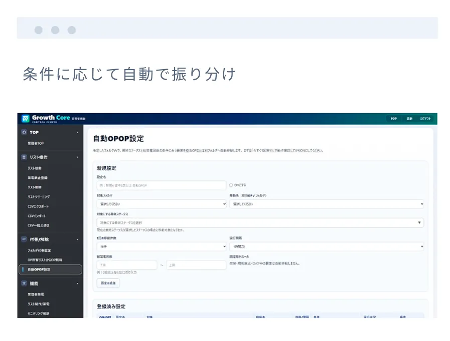
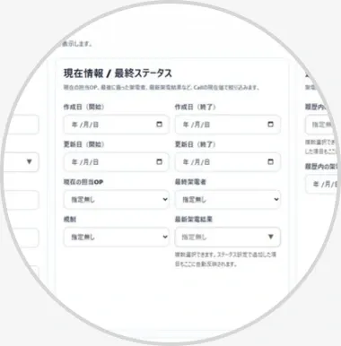
FEATURE 03
フォルダ単位で付帯ルールを決めておけば、
条件に合う顧客がオペレーターへ自動で振り分けられます。
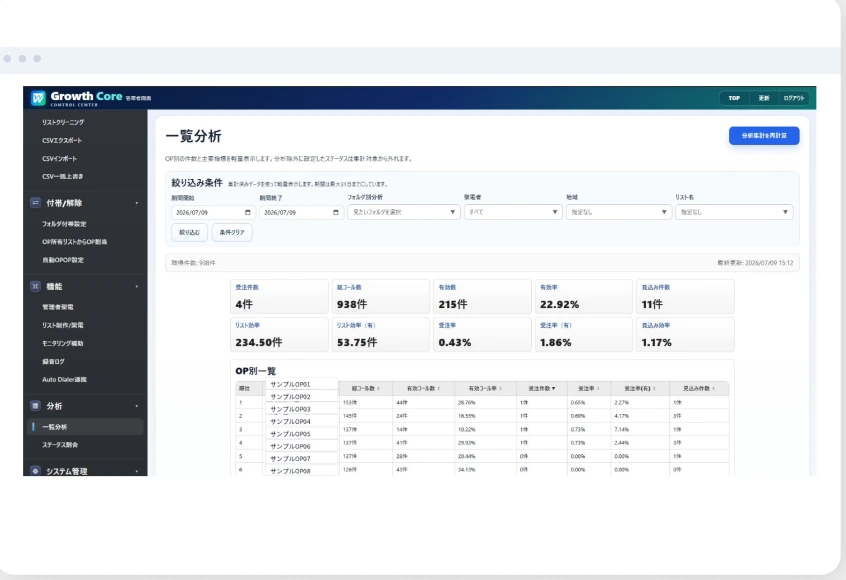
FEATURE 04
架電数、有効率、オペレーターごとの状況を一覧で確認。
伸びているリストも止まっている箇所も、開いた瞬間にわかります。
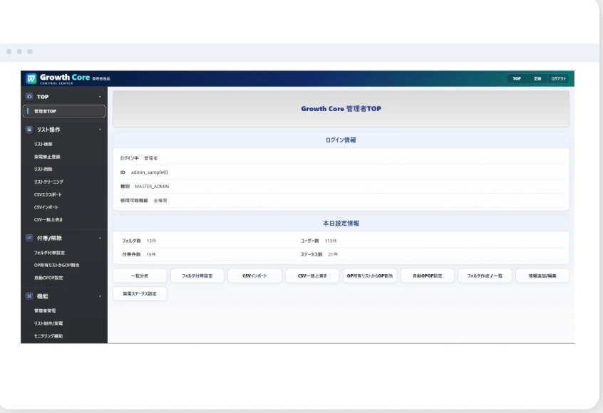
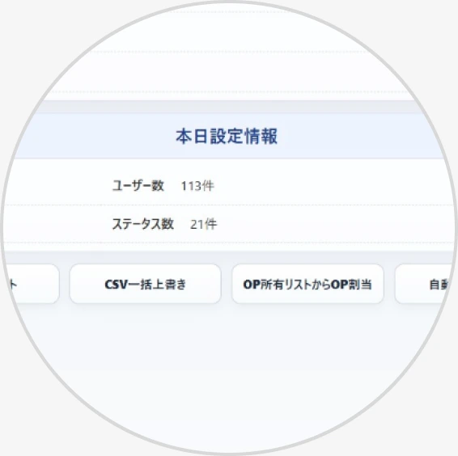
FEATURE 05
ログイン情報、フォルダ数、ユーザー数、ステータス数。
管理に必要な情報と主要メニューを1画面にまとめています。
SETUP
初期リストを入れ、フォルダと認証を整えれば、
その日から架電を始められます。
顧客リストをCSVで絞り込み、検索条件を整えます。
付帯ルールやアポインターへの割り当て方針を整理します。
アポインター画面から認証
設定を完了します。
発信後、架電結果と再コール
日時を記録します。
EFFECT
ツールを1つにまとめ、準備と集計を自動化すると、現場と管理それぞれの動きが変わります。
Case1 | 架電数アップ
顧客確認・発信・結果入力を１画
面に集約。アプリの切り替えも終
話後の転記も不要。
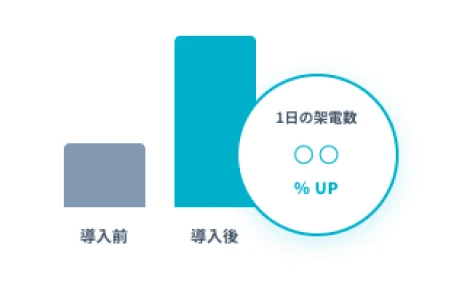
Case2 | 準備時間の短縮
フォルダ単位で付帯ルールを設定。条件に合う顧客をアポインターへ自動で割り当て。
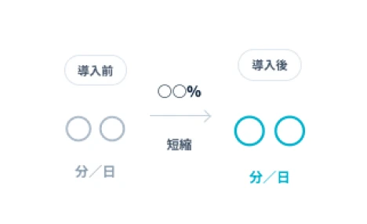
Case3 | 意思決定の高速化
架電結果はその場で分析画面へ反映。受注件数・有効率・担当別の実績を集計作業無しで認識できます。
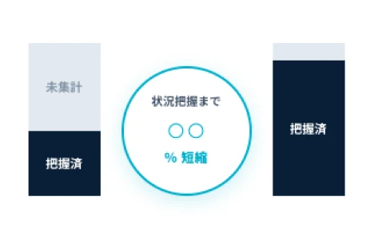
SUPPORT
初期設定から認証、CSV運用、問い合わせ対応まで。運用に乗るところまで並走します。
運用開始までの設定を一緒に進めます。
最初のリストの投入と振り分け設計をサポート。
承認設定でつまづいた際も個別に対応します。
分析の見方や、運用のコツをお伝えします。
運用中の疑問にも的口が対応します。
FAQ
初日にCSVインポート・フォルダ設定・システム認証を済ませれば、その日から架電を開始できます。初期設定はサポートいたします。
※回答文言は未確定です。Figma側でのご指定をお願いします。
※回答文言は未確定です。Figma側でのご指定をお願いします。
※回答文言は未確定です。Figma側でのご指定をお願いします。
※回答文言は未確定です。Figma側でのご指定をお願いします。
機能一覧、画面イメージ、導入の流れを
まとめた資料をお送りします。
デモをご希望の場合も、
お気軽にお問い合わせください。